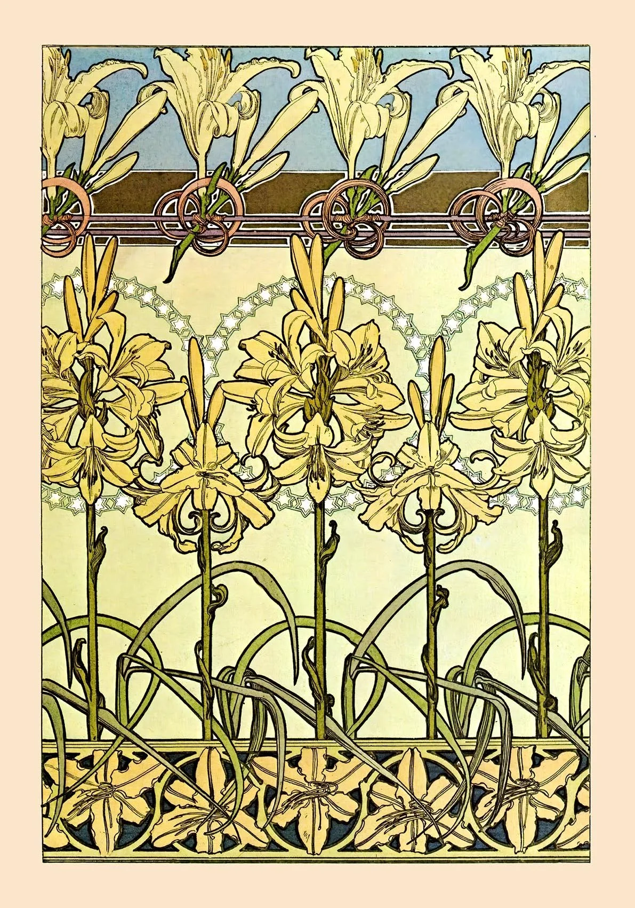
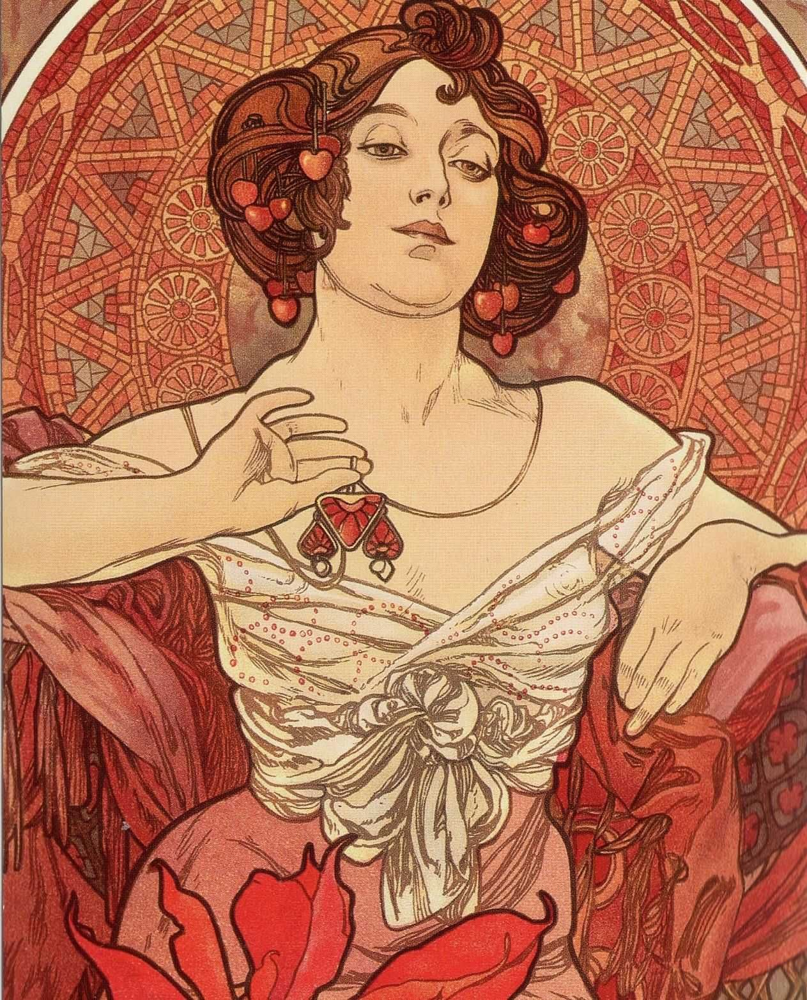
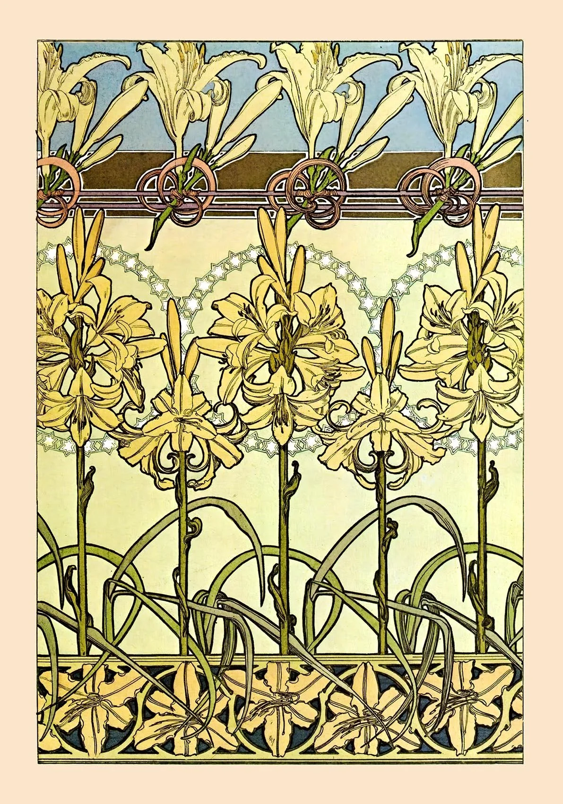
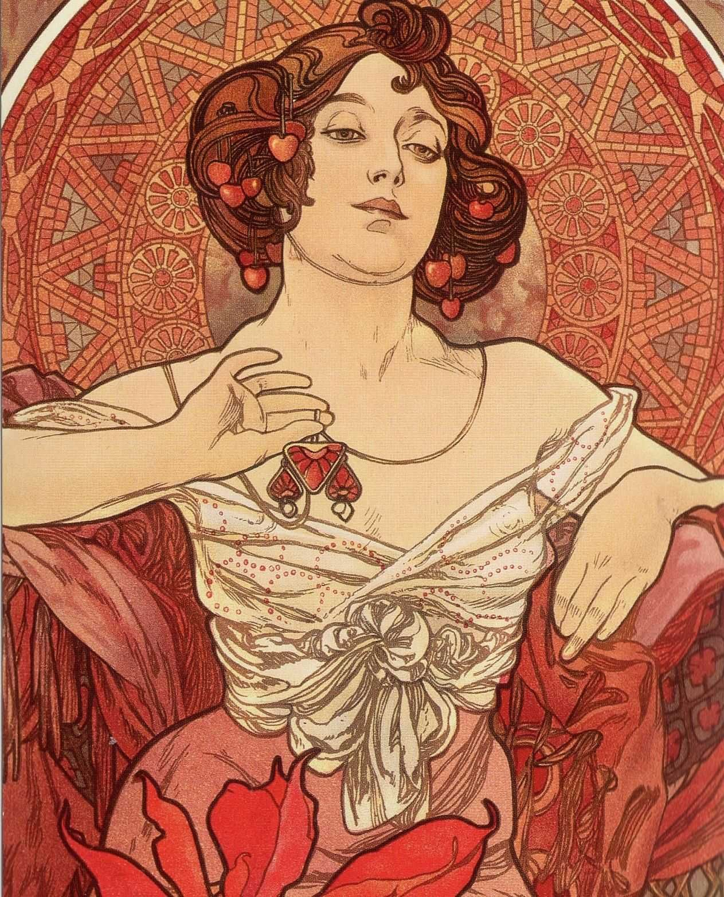

Med sin nye udstilling træder Anna Holm ind i dialog med Art Nouveau-traditionen – en stil, der hylder naturens former, de sanselige linjer og det håndgjorte udtryk. Gennem sine malerier væver hun fortid og nutid sammen i et billedsprog, hvor blomster, figurer og ornamenter flyder i ét rytmisk kredsløb. Holms værker bærer præg af både nostalgi og fornyelse. Hun lader sig inspirere af Art Nouveau’s organiske æstetik, men oversætter den til en nutidig sensibilitet, hvor farver, bevægelse og stemning får nyt liv. Ved åbningen byder Anna Holm personligt velkommen og fortæller om sin proces og inspiration. Publikum inviteres til at nyde udstillingen med et glas vin eller rosé i hånden – en sanselig oplevelse i kunstens og naturens ånd.
Vi åbner dørene til en verden, der bugter sig og blomstrer – en verden, hvor kunsten slipper fri af de lige linjer. I dag skal vi dykke ned i Art Nouveau, en stil, hvor naturen og fantasien fik frit spil. Men det her handler ikke kun om gamle bygninger og smukke plakater. Det handler om jer – om hvordan I som unge kan lade jer inspirere af en tid, hvor kunstnerne turde tænke anderledes, bryde regler og skabe noget helt nyt. Art Nouveau viser os, at skønhed og idéer kan vokse overalt – i design, i hverdagen og i den måde, vi udtrykker os på. Måske opdager I, at de slyngede linjer og vilde former faktisk siger noget meget nutidigt: at kreativitet starter, når man tør se verden på sin egen måde.

Alfons Mucha (1860–1939) var en tjekkisk kunstner og en af de mest markante skikkelser inden for Art Nouveau-bevægelsen. Han blev kendt for sine ikoniske plakater, hvor han forbandt elegante kvindefigurer med dekorative mønstre, blomster og bløde, organiske linjer.
Mucha’s værker er kendetegnet ved deres harmoniske kompositioner, lyse farver og sans for detaljer. Han ønskede at forene kunst og hverdagsliv – at gøre det smukke tilgængeligt for alle.
Hans stil har haft stor indflydelse på både grafik, design og mode, og hans arbejde står i dag som et symbol på skønhed, idealisme og den dekorative æstetik fra århundredskiftet.


 


